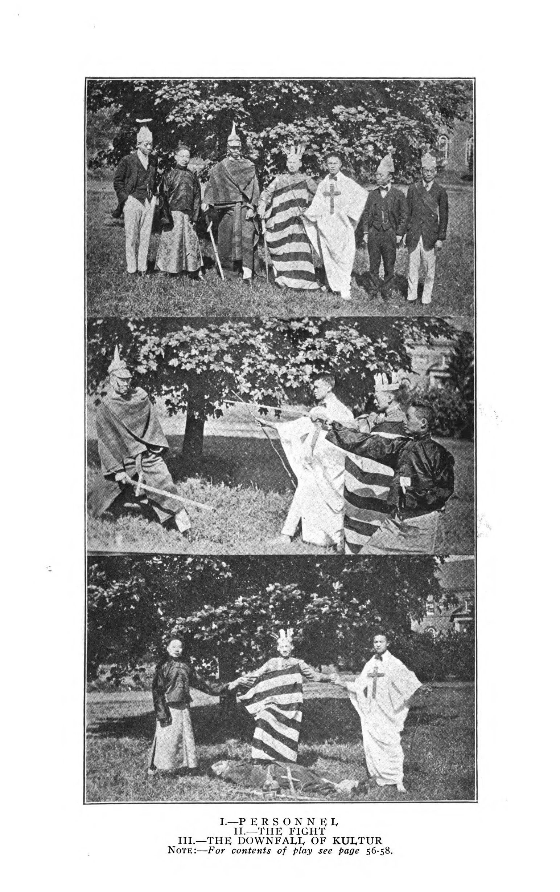
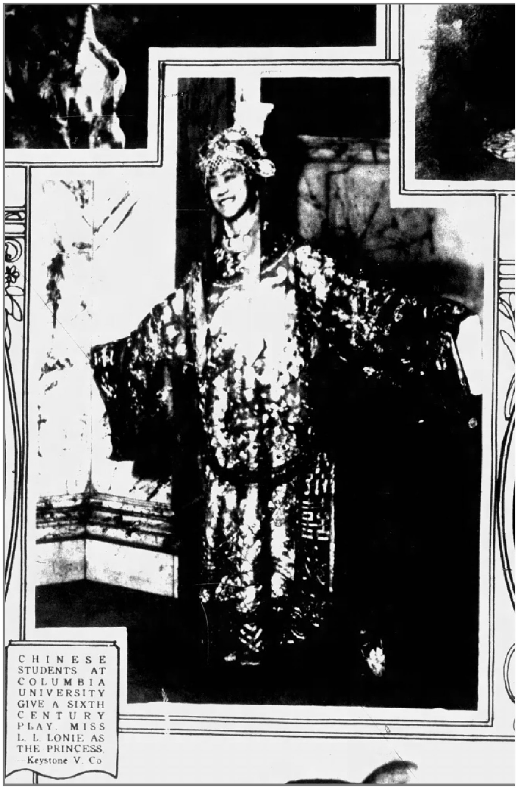

Senior Honor Thesis
This paper brings forth research on the Chinese international students theatre (CST) in the U.S. between 1906 and 1931. This deeply understudied field, often dismissed because of its amateur status and sparse archival records, offers valuable insights into how performance enabled Chinese students to negotiate their foreign identity under the precarities, misrepresentations, and nostalgia. This study reconstructs CST performance histories by assembling archival evidence from The Chinese Students’ Monthly, Chinese Students’ Quarterly 留美學生季報, and The Chinese Students’ Christian Journal alongside newspaper coverage, memoirs, and surviving manuscripts. Drawing on these materials, I would argue, CST performances, as a form of amateur intercultural theatre, becomes a site where knowledge is translated and produced, and where visibility, representation, and community formation are negotiated across linguistic and cultural boundaries in the early twentieth century. In this process, CST generated new forms of “Chineseness” that shaped not only American spectators’ understanding of China, but also Chinese students’ understanding of themselves.

